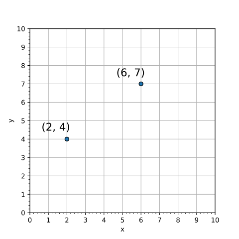
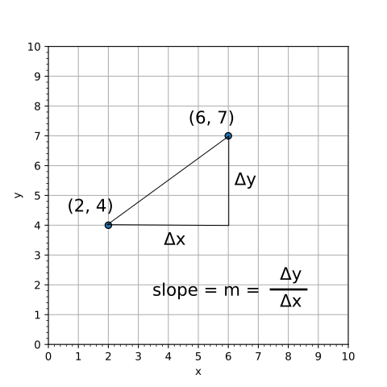
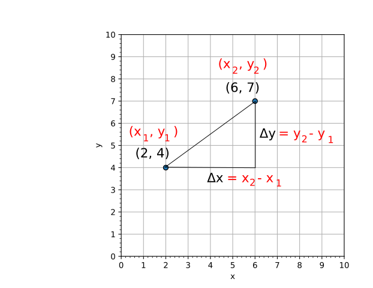

Here we'll write programs to work with two points, starting by finding the slope of the line between the two points.
Slope
The Math

Fig 1. Two points. Point 1: (2,4) and Point2: (6,7).
The slope (m) of a line between two points is a measure of how fast the line goes up, so you take the vertical change (the change in y (Δy)), divided by the horizantal change (the change in x (Δx).
$$m = \frac{\Delta y}{\Delta x} $$

Fig 2. Finding the slope.
For this specific problem we can easily calculate the change in y and change in x, however, for a program we'll want to generalize as much as possible, so we'll label the two points as Point 1 and Point 2 and the coordinates as (x1, y1) and (x2, y2):

Fig 3. Finding the change in y and the change in x.
So, ultimately, we'll go with the three equations:
$$ \Delta x = x_2 - x_1 $$
$$ \Delta y = y_2 - y_1 $$
$$ m = \frac{\Delta y}{\Delta x} $$
The Program
Distance
To find the shortest distance between two points we can find the horizontal distance (Δx) and the vertical distance (Δy), then use Pythagoras' theorem to find the shortest distance (d).
There are 20 LED's in the strip, so your starting value should be 15 and the ending value should be 20. The sequence stops at one less than the last value given.
Show Solution ▼
Solution: To light up the last 5 lights (green) use:
import board
import neopixel
pixels = neopixel.NeoPixel(board.D18, 20)
for i in range(15, 20):
pixels[i] = (0, 20, 0)